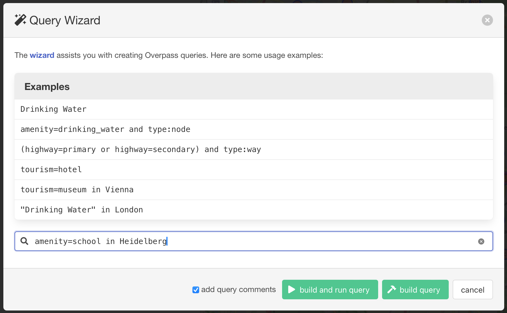
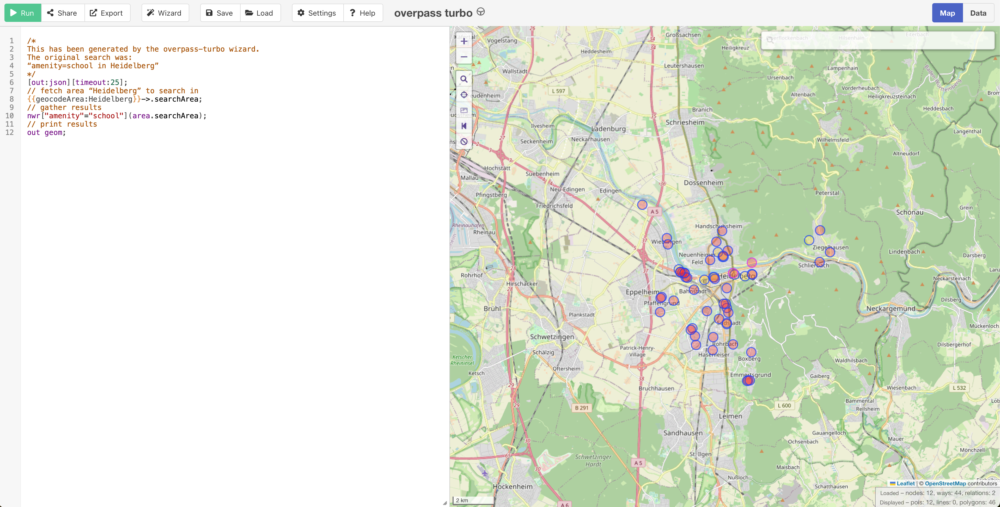
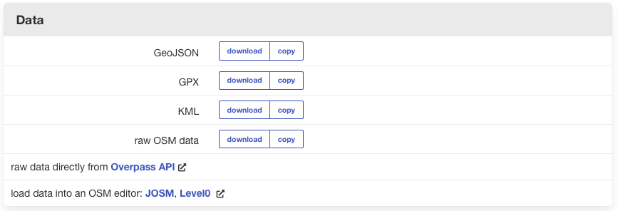
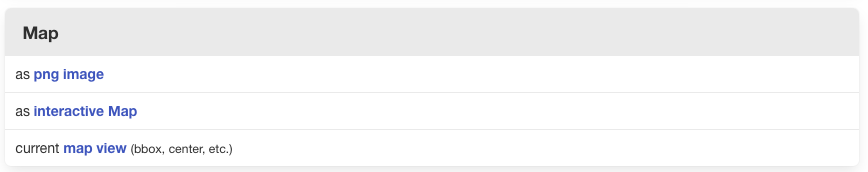
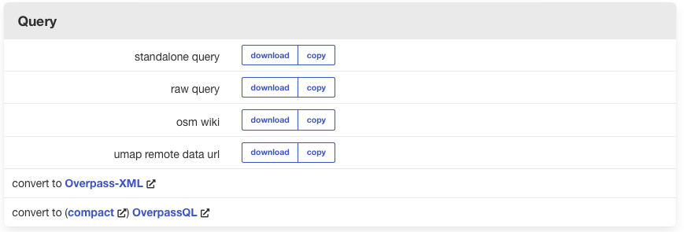

Datos de OpenStreetMap (OSM)#
Geofabrik#
El sitio web Geofabrik ofrece descargas de datos de OSM por regiones. Puede seleccionar una región de interés y descargar todos los datos de OSM dentro de esa región. Es el método más extenso. Recomendamos utilizar este método si desea explorar los datos de OSM o si necesita muchos datos de OSM. Sin embargo, si solo necesita datos específicos, como caminos, puntos de asentamientos o edificios, puede ser mejor elegir la herramienta de exportación HOT o QuickOSM.
Ejemplo
Vaya a __https://download.geofabrik.de/__ y navegue hasta Mauricio
haciendo clic enAfrica->MauritiusEn Formatos más usados seleccione la opción
mauritius-latest-free.shp.zipy descargue el archivo. Guárdelo en algún lugar de su computadora donde pueda encontrarlo y descomprímalo.Verifique el contenido de la carpeta. Existen muchos shapefiles diferentes, cada uno contiene un solo tipo de datos OSM. Toda la lista de capas y lo que incluyen puede consultarse aquí.
Abra un nuevo proyecto QGIS y guárdelo en la carpeta
projectde la carpeta del ejercicio.Cargue el archivo
gis_osm_places_a_free_1.shp. Esta capa de polígonos contiene los límites de las distintas entidades. Tómese un tiempo para explorar los datos mediante la tabla de atributos.(Opcional) Puede seleccionar todas las entidades de la capa con la tecla “fclass” = “island” y exportarlos como una nueva capa. Esto le permitirá empezar a crear un mapa de las islas Mauricio.
Cargue el archivo
gis_osm_buildings_a_free_1.shp. Esta capa de polígonos contiene todos los edificios de Mauricio mapeados en OSM. Tómese un tiempo para explorar la capa.Añada un mapa base por satélite utilizando el complemento QuickMapServices para comprobar si hay edificios sin cartografiar.
Cargue el archivo
gis_osm_landuse_a_free_1.shp. Consulte el conjunto de datos y utilice la función de clasificación para obtener una mejor visión de conjunto.Haga clic derecho en la capa
gis_osm_landuse_a_free_1en el panelLayer Panel->Properties. Se abrirá una nueva ventana con una sección de pestañas verticales a la izquierda. Vaya a la pestañaSymbology.En la parte superior encontrará un menú desplegable. Despliéguelo y elija
Categorized. EnValueseleccione “fclass” (abreviatura de featureclass [clase de entidad]).Más abajo, haga clic en
Classify. Verá todos los valores únicos de la columna “fclass”. Puede ajustar los colores haciendo doble clic en una fila del campo central. Una vez que haya terminado, haga clic enApplyyOKpara cerrar la ventana de simbología.
Como puede ver, Geofabrik es ideal si desea obtener conjuntos de datos de OSM completos para países o regiones enteros.
QuickOSM#
El complemento QuickOSM le permite cargar datos de OSM desde su ventana de QGIS. Es un método rápido y fácil, pero requiere conocimientos más profundos sobre el modelo de datos de OSM en comparación con las otras opciones.
Para encontrar los datos que busca, deberá formular una consulta de datos. Existen dos excelentes recursos que le permitirán adaptar su consulta en función de la clave y el valor exactos que necesita:
Wiki de OSM y, especialmente, el artículo Map features (Entidades del mapa).
Este método tiene la ventaja de que se pueden descargar los datos que se necesitan específicamente, pero debe saber formular las consultas. Para utilizar QuickOSM, debe instalar el complemento de QGIS.
Overpass turbo#
Overpass Turbo es una herramienta de exportación de datos basada en web para OSM. Mediante la ejecución de una consulta, puede descargar los datos e importarlos a su proyecto. Para ejecutarlo, puede escribir su consulta a la izquierda o utilizar el asistente que le ayudará con la redacción de las consultas. Ejemplo Para buscar escuelas en su área de búsqueda, puede redactar usted mismo la consulta o utilizar el asistente para hacerlo. 1. Verificar las directrices de etiquetado Busque en la wiki de OSM o en taginfo. En nuestro ejemplo es: amenity=school 2. Escribir o formular la consulta Utilice el asistente y escriba amenity=school en Heidelberg o redacte su propia consulta (por ejemplo, para su área de búsqueda): Asistente:
{kind=link}

Fig. 7 Captura de pantalla del asistente en overpass turbo#
{kind=link}

Fig. 8 Captura de pantalla del resultado#
Consulta:
[out:json];
(
node ["amenity"="school"](49.35,8.553,49.481,8.756);
way ["amenity"="school"](49.35,8.553,49.481,8.756);
relation ["amenity"="school"](49.35,8.553,49.481,8.756);
);
out;
Cuadro delimitador Para consultar con un cuadro delimitador se necesita un formato especial. Especifíquelo de la siguiente manera:
s (límite sur en grados decimales, latitud más baja)
w (límite occidental en grados decimales, longitud más baja)
n (límite norte en grados decimales, latitud más alta)
e (límite oriental en grados decimales, longitud máxima)
Por ejemplo:
node ["key"="value"] (s, w, n, e);
out;
Tip
Para más información sobre el lenguaje de las consultas, lea la Guía del lenguaje.
3. Descarga de datos Los resultados se pueden exportar de varias formas.
Exportando los datos como GeoJSON se pueden importar posteriormente en el proyecto QGIS.
{kind=link}

Fig. 9 Captura de pantalla de cómo exportar datos en overpass turbo#
Al exportar la consulta como mapa, puede compartir su vista actual como enlace o imagen.
{kind=link}

Fig. 10 Captura de pantalla de cómo exportar el mapa en overpass turbo#
Al exportar su consulta puede obtener el texto o convertirlo en un archivo OverpassXML o consulta con formato OverpassQL.
{kind=link}

Fig. 11 Captura de pantalla de cómo exportar una consulta en overpass turbo#
Tip
Para más información, consulte laWiki.